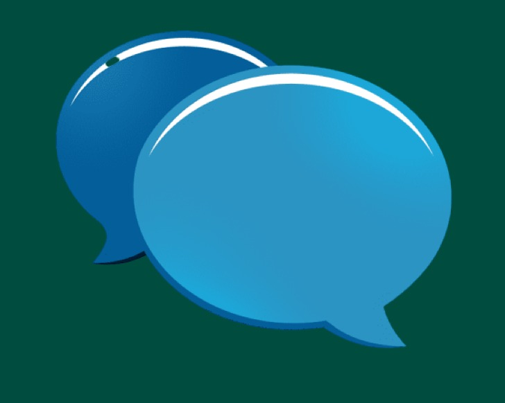

<nav class="navbar navbar-toggleable-md navbar-inverse fixed-top">
  <a class="navbar-brand text-white" routerLink='/'>
    
    <strong>SmartComm</strong>
  </a>
  <ul class="nav navbar-nav">
    <li *ngIf="isLoggedIn" class="nav-item">
        <button class="btn btn-primary" (click)='chatWithBot()'>Chat with Bot</button>&nbsp;&nbsp;
        <button class="btn btn-primary" (click)="signOut()">Sign Out <i class="ion-log-in" data-pack="default" data-tags="sign in"></i></button>
    </li>
  </ul>
</nav>
